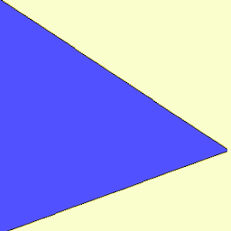

今後の予定
まだちょっとバグあります。
ボタンの枠ぶちの色が反映されないようです。
また、表示のカスタマイズについてかゆいところに手が届かないので改善予定です。
UIについては随時追加予定です。

kamishivy は、入力のできるUIを指定した紙芝居のように順番に表示していく Windows 向けのアプリです。
入力や記録のできる機能を持ったパワーポイントのようなアプリを目指しています。
フリーソフトです。
下記にライセンスのリンクがありますので、団体、企業等でお使いになる場合はそちらを提出してください。
権利上の観点からは自由に使えるはずです。
ライセンスはMITです。
UIはいくつかアセットが用意してあります。
CUIと呼ばれるエクセルファイルに設定を打ち込むことで自由にカスタマイズ可能です。
（csvも対応していますが、設定を書き込むのがかなりめんどくさいです）
UI自体はpythonで作成することも可能です。
pythonってなんだ？って人も、簡単な機能のUIなら、AI用の説明書を入れてAIにお願いすればUIを作ってくれます。(数回手直しすれば使えることが多いです）
作ったUIはパソコンにpythonがインストールしてなくてもUIフォルダに放り込めば使えます。
（難しいUI、つまり特殊なライブラリが必要なものはNGです。また、exe版はバーコードとmpeg4に対応していません）
まだちょっとバグあります。
ボタンの枠ぶちの色が反映されないようです。
また、表示のカスタマイズについてかゆいところに手が届かないので改善予定です。
UIについては随時追加予定です。